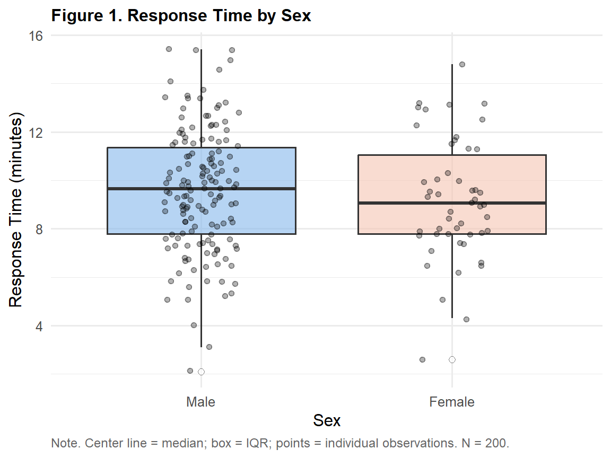
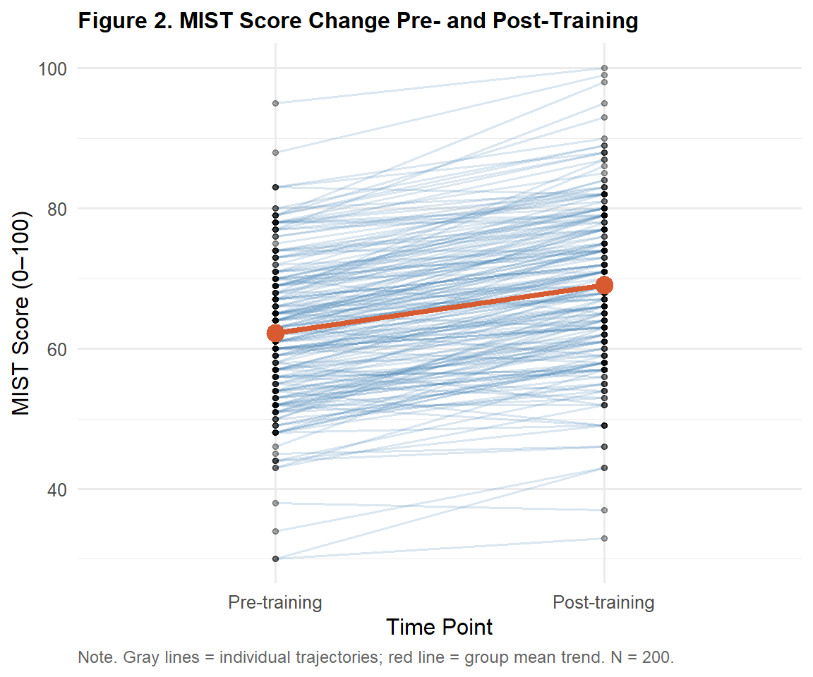

library(tidyverse)
library(gt)
ems <- read.csv("data/ems_main.csv",
stringsAsFactors = FALSE)
ems$gender <- factor(ems$gender,
levels = c("男", "女"))
ems$level <- factor(ems$level,
levels = c("EMT-1", "EMT-2", "EMT-P"))
ems$district <- factor(ems$district,
levels = c("北部", "中部", "南部", "東部"))
ems$shift <- factor(ems$shift,
levels = c("日班為主", "夜班為主", "輪班"))Topic 6：Independent and Paired t-Tests
Statistical Theory, Assumption Checks, R Implementation, APA Reporting
Learning Objectives
- Understand the statistical logic and formula derivation of the t-test
- Correctly distinguish between independent and paired sample designs
- Perform assumption checks and select the appropriate t-test
- Produce APA-format result tables and reporting sentences
Statistical Method Map (This Topic)
| X (Predictor) | Y (Outcome) | Method | Nonparametric Alternative |
|---|---|---|---|
| Categorical (2 groups, independent) | Continuous | Independent t-test | Mann-Whitney U (Topic 8) |
| Categorical (2 groups, paired) | Continuous | Paired t-test | Wilcoxon Signed-Rank (Topic 8) |
Note
Choosing the wrong design is the most serious error. Using an independent t-test on paired data — or vice versa — will produce incorrect conclusions. The design must be determined before data collection.
I. Statistical Theory
1.1 Why Do We Need the t-Test?
When comparing the means of two groups, the most intuitive approach is to compute the difference (x̄₁ − x̄₂). However, this raw difference alone cannot tell us whether the difference is real or simply due to sampling error.
The t-test standardizes the observed group difference by dividing it by the standard error — the natural variability of that difference under repeated sampling — yielding the t-statistic:
\[t = \frac{\text{Signal}}{\text{Noise}} = \frac{\bar{x}_1 - \bar{x}_2}{SE}\]
A larger t-value means the group difference is large relative to sampling variability — making it increasingly implausible that the difference arose by chance.
1.2 Independent Samples t-Test
\[t = \frac{\bar{x}_1 - \bar{x}_2}{\sqrt{s_1^2/n_1 + s_2^2/n_2}}\]
Welch t-test (R default) does not assume equal variances, and its degrees of freedom are adjusted accordingly (resulting in a non-integer df — this is normal):
\[df = \frac{(s_1^2/n_1 + s_2^2/n_2)^2} {(s_1^2/n_1)^2/(n_1-1) + (s_2^2/n_2)^2/(n_2-1)}\]
Tip
Practical advice: R’s t.test() defaults to the Welch t-test (var.equal = FALSE), which performs well regardless of whether variances are equal. There is no need to run Levene’s test first before deciding.
1.3 Paired t-Test
The paired t-test is fundamentally a one-sample t-test applied to the difference scores d:
\[d_i = x_{\text{post},i} - x_{\text{pre},i}\]
\[t = \frac{\bar{d}}{s_d / \sqrt{n}}, \quad df = n - 1\]
Why is the paired design more powerful?
The denominator SE in an independent t-test includes between-person variability (some individuals naturally score higher). The paired t-test analyzes each person’s own before-after difference, eliminating between-person variability, which reduces SE, increases t, and makes it easier to detect real effects.
1.4 Independent vs Paired t-Test: Key Differences
| Aspect | Independent t-test | Paired t-test |
|---|---|---|
| Data structure | Two separate groups | Same participants measured twice |
| Unit of analysis | Individual observations per group | Difference score per pair |
| t formula | (x̄₁ − x̄₂) / SE₁₂ | d̄ / (s_d / √n) |
| df | n₁ + n₂ − 2 (Welch-adjusted) | n − 1 |
| Advantage | Simple design; no tracking required | Eliminates between-person variability |
| EMS example | ALS vs BLS response time | MIST score pre vs post training |
1.5 Assumptions
| Assumption | Description | How to Check |
|---|---|---|
| Normality | Y (or difference scores) approximately normal within each group | Shapiro-Wilk; Q-Q plot |
| Independence | Observations are independent of each other | Design-level judgment |
| Homogeneity of variance | Equal variances across groups (Student’s t only) | Levene’s test (not needed for Welch) |
Important
When n ≥ 30: The Central Limit Theorem ensures that sample means approximate normality even when raw data are skewed — t-tests remain valid. It is still recommended to run Shapiro-Wilk, but the threshold for concern can be more relaxed.
1.6 Effect Size: Cohen’s d
\[d = \frac{\bar{x}_1 - \bar{x}_2}{s_p}\]
where \(s_p\) is the pooled standard deviation.
| d | |
|---|---|
| 0.20–0.49 | Small effect |
| 0.50–0.79 | Medium effect |
| ≥ 0.80 | Large effect |
II. Analysis Workflow
Step 1: Confirm design (independent or paired?)
↓
Step 2: Descriptive statistics + boxplot
↓
Step 3: Shapiro-Wilk normality test
↓
Step 4: Run t-test (Welch default)
↓
Step 5: Compute Cohen's d effect size
↓
Step 6: APA-format reportIII. R Implementation
Load packages and data
Independent Samples t-Test
Research question: Do male and female EMS personnel differ significantly in mean on-scene response time?
Figure 1. Descriptive Boxplot
ggplot(ems, aes(x = gender, y = response_time,
fill = gender)) +
geom_boxplot(alpha = 0.6,
outlier.shape = 21,
outlier.fill = "white",
outlier.size = 2) +
geom_jitter(width = 0.15, alpha = 0.3, size = 1.5) +
scale_fill_manual(
values = c("男" = "#85B7EB", "女" = "#F5C4B3")
) +
scale_x_discrete(labels = c("男" = "Male", "女" = "Female")) +
labs(
title = "Figure 1. Response Time by Sex",
x = "Sex",
y = "Response Time (minutes)",
caption = "Note. Center line = median; box = IQR; points = individual observations. N = 200."
) +
theme_minimal(base_size = 12) +
theme(
plot.title = element_text(face = "bold", size = 12),
legend.position = "none",
plot.caption = element_text(hjust = 0, size = 9,
color = "gray40")
)
Table 1. Descriptive Statistics by Group
ems |>
dplyr::group_by(gender) |>
dplyr::summarise(
n = n(),
Mean = round(mean(response_time), 2),
SD = round(sd(response_time), 2),
Median = round(median(response_time), 2),
Q1 = round(quantile(response_time, 0.25), 2),
Q3 = round(quantile(response_time, 0.75), 2),
.groups = "drop"
) |>
dplyr::mutate(
Sex = dplyr::case_when(
gender == "男" ~ "Male",
gender == "女" ~ "Female"
)
) |>
dplyr::select(Sex, n, Mean, SD, Median, Q1, Q3) |>
gt() |>
tab_header(
title = "Table 1. Response Time Descriptive Statistics by Sex"
) |>
tab_spanner(label = "Central Tendency",
columns = c(Mean, Median)) |>
tab_spanner(label = "Quartiles",
columns = c(Q1, Q3)) |>
tab_source_note(
source_note = "Note. Units: minutes."
) |>
cols_align(align = "center", columns = -Sex) |>
cols_align(align = "left", columns = Sex) |>
tab_style(
style = cell_text(weight = "bold"),
locations = cells_column_labels()
) |>
tab_style(
style = cell_text(weight = "bold"),
locations = cells_column_spanners()
) |>
tab_options(
table.border.top.style = "hidden",
heading.border.bottom.style = "solid",
column_labels.border.top.style = "solid",
column_labels.border.bottom.style = "solid",
table.border.bottom.style = "solid",
table.font.size = px(13),
heading.title.font.size = px(14),
heading.align = "left"
)| Table 1. Response Time Descriptive Statistics by Sex | ||||||
| Sex | n |
Central Tendency
|
SD |
Quartiles
|
||
|---|---|---|---|---|---|---|
| Mean | Median | Q1 | Q3 | |||
| Male | 150 | 9.58 | 9.65 | 2.53 | 7.8 | 11.35 |
| Female | 50 | 9.20 | 9.05 | 2.48 | 7.8 | 11.05 |
| Note. Units: minutes. | ||||||
Table 2. Shapiro-Wilk Normality Test
sw_m <- shapiro.test(ems$response_time[ems$gender == "男"])
sw_f <- shapiro.test(ems$response_time[ems$gender == "女"])
data.frame(
Group = c("Male", "Female"),
W = c(round(sw_m$statistic, 3),
round(sw_f$statistic, 3)),
p = c(round(sw_m$p.value, 3),
round(sw_f$p.value, 3)),
Decision = c(ifelse(sw_m$p.value > .05,
"Fail to reject normality",
"Reject normality"),
ifelse(sw_f$p.value > .05,
"Fail to reject normality",
"Reject normality"))
) |>
gt() |>
tab_header(
title = "Table 2. Shapiro-Wilk Normality Test by Group"
) |>
tab_source_note(
source_note = "Note. p > .05 indicates failure to reject the normality assumption."
) |>
cols_align(align = "center", columns = c(W, p)) |>
cols_align(align = "left",
columns = c(Group, Decision)) |>
tab_style(
style = cell_text(weight = "bold"),
locations = cells_column_labels()
) |>
tab_options(
table.border.top.style = "hidden",
heading.border.bottom.style = "solid",
column_labels.border.top.style = "solid",
column_labels.border.bottom.style = "solid",
table.border.bottom.style = "solid",
table.font.size = px(13),
heading.title.font.size = px(14),
heading.align = "left"
)| Table 2. Shapiro-Wilk Normality Test by Group | |||
| Group | W | p | Decision |
|---|---|---|---|
| Male | 0.995 | 0.923 | Fail to reject normality |
| Female | 0.977 | 0.420 | Fail to reject normality |
| Note. p > .05 indicates failure to reject the normality assumption. | |||
Table 3. Independent Samples t-Test Results
t_ind <- t.test(response_time ~ gender,
data = ems,
var.equal = FALSE)
# Manual Cohen's d calculation
m1 <- mean(ems$response_time[ems$gender == "男"])
m2 <- mean(ems$response_time[ems$gender == "女"])
s1 <- sd(ems$response_time[ems$gender == "男"])
s2 <- sd(ems$response_time[ems$gender == "女"])
n1 <- sum(ems$gender == "男")
n2 <- sum(ems$gender == "女")
sp <- sqrt(((n1-1)*s1^2 + (n2-1)*s2^2) / (n1+n2-2))
d_val <- abs((m1 - m2) / sp)
data.frame(
Comparison = "Male vs Female (Response Time)",
t = round(t_ind$statistic, 3),
df = round(t_ind$parameter, 1),
p = ifelse(t_ind$p.value < .001,
"< .001",
round(t_ind$p.value, 3)),
CI = paste0("[",
round(t_ind$conf.int[1], 2), ", ",
round(t_ind$conf.int[2], 2), "]"),
d = round(d_val, 3),
Effect = dplyr::case_when(
d_val >= .80 ~ "Large",
d_val >= .50 ~ "Medium",
TRUE ~ "Small"
)
) |>
gt() |>
tab_header(
title = "Table 3. Independent t-Test: Response Time by Sex"
) |>
tab_source_note(
source_note = paste0(
"Note. Welch t-test (var.equal = FALSE). ",
"CI = 95% confidence interval of the mean difference. ",
"d = Cohen's d effect size. N = 200."
)
) |>
cols_label(
Comparison = "Comparison", t = "t", df = "df",
p = "p", CI = "95% CI", d = "d", Effect = "Effect Size"
) |>
cols_align(align = "center",
columns = c(t, df, p, CI, d, Effect)) |>
cols_align(align = "left", columns = Comparison) |>
tab_style(
style = cell_text(weight = "bold"),
locations = cells_column_labels()
) |>
tab_options(
table.border.top.style = "hidden",
heading.border.bottom.style = "solid",
column_labels.border.top.style = "solid",
column_labels.border.bottom.style = "solid",
table.border.bottom.style = "solid",
table.font.size = px(13),
heading.title.font.size = px(14),
heading.align = "left"
)| Table 3. Independent t-Test: Response Time by Sex | ||||||
| Comparison | t | df | p | 95% CI | d | Effect Size |
|---|---|---|---|---|---|---|
| Male vs Female (Response Time) | 0.926 | 85.4 | 0.357 | [-0.43, 1.19] | 0.15 | Small |
| Note. Welch t-test (var.equal = FALSE). CI = 95% confidence interval of the mean difference. d = Cohen's d effect size. N = 200. | ||||||
Paired t-Test
Research question: Did EMS personnel show a significant improvement in MIST clinical decision scores following simulation training?
Figure 2. Pre-Post Change Plot
ems_long <- ems |>
dplyr::select(id, mist_pre, mist_post) |>
tidyr::pivot_longer(c(mist_pre, mist_post),
names_to = "time",
values_to = "score") |>
dplyr::mutate(
time = factor(time,
levels = c("mist_pre", "mist_post"),
labels = c("Pre-training", "Post-training"))
)
ggplot(ems_long, aes(x = time, y = score, group = id)) +
geom_line(alpha = 0.2, color = "steelblue") +
geom_point(alpha = 0.3, size = 1.2) +
stat_summary(aes(group = 1),
fun = mean, geom = "line",
color = "#D85A30", linewidth = 1.3) +
stat_summary(aes(group = 1),
fun = mean, geom = "point",
color = "#D85A30", size = 4) +
labs(
title = "Figure 2. MIST Score Change Pre- and Post-Training",
x = "Time Point",
y = "MIST Score (0–100)",
caption = "Note. Gray lines = individual trajectories; red line = group mean trend. N = 200."
) +
theme_minimal(base_size = 12) +
theme(
plot.title = element_text(face = "bold", size = 12),
plot.caption = element_text(hjust = 0, size = 9,
color = "gray40")
)
Table 4. Pre- and Post-Training Descriptive Statistics
data.frame(
Time = c("Pre-training", "Post-training",
"Difference (Post − Pre)"),
n = c(nrow(ems), nrow(ems), nrow(ems)),
Mean = c(round(mean(ems$mist_pre), 2),
round(mean(ems$mist_post), 2),
round(mean(ems$mist_post - ems$mist_pre), 2)),
SD = c(round(sd(ems$mist_pre), 2),
round(sd(ems$mist_post), 2),
round(sd(ems$mist_post - ems$mist_pre), 2)),
Min = c(round(min(ems$mist_pre), 2),
round(min(ems$mist_post), 2),
round(min(ems$mist_post - ems$mist_pre), 2)),
Max = c(round(max(ems$mist_pre), 2),
round(max(ems$mist_post), 2),
round(max(ems$mist_post - ems$mist_pre), 2))
) |>
gt() |>
tab_header(
title = "Table 4. MIST Score Descriptive Statistics: Pre- and Post-Training"
) |>
tab_source_note(
source_note = "Note. Units: points. Difference = post-training score − pre-training score."
) |>
cols_align(align = "center", columns = -Time) |>
cols_align(align = "left", columns = Time) |>
tab_style(
style = cell_text(weight = "bold"),
locations = cells_column_labels()
) |>
tab_style(
style = cell_fill(color = "#F0F5FA"),
locations = cells_body(rows = 3)
) |>
tab_options(
table.border.top.style = "hidden",
heading.border.bottom.style = "solid",
column_labels.border.top.style = "solid",
column_labels.border.bottom.style = "solid",
table.border.bottom.style = "solid",
table.font.size = px(13),
heading.title.font.size = px(14),
heading.align = "left"
)| Table 4. MIST Score Descriptive Statistics: Pre- and Post-Training | |||||
| Time | n | Mean | SD | Min | Max |
|---|---|---|---|---|---|
| Pre-training | 200 | 62.21 | 10.60 | 30 | 95 |
| Post-training | 200 | 69.09 | 11.51 | 33 | 100 |
| Difference (Post − Pre) | 200 | 6.88 | 4.85 | -6 | 19 |
| Note. Units: points. Difference = post-training score − pre-training score. | |||||
Table 5. Paired t-Test Results
t_pair <- t.test(ems$mist_post, ems$mist_pre,
paired = TRUE)
diff_scores <- ems$mist_post - ems$mist_pre
d_paired <- mean(diff_scores) / sd(diff_scores)
data.frame(
Comparison = "Post-training vs Pre-training",
t = round(t_pair$statistic, 3),
df = t_pair$parameter,
p = ifelse(t_pair$p.value < .001,
"< .001",
round(t_pair$p.value, 3)),
Mean_diff = round(t_pair$estimate, 2),
CI = paste0("[",
round(t_pair$conf.int[1], 2), ", ",
round(t_pair$conf.int[2], 2), "]"),
d = round(abs(d_paired), 3),
Effect = dplyr::case_when(
abs(d_paired) >= .80 ~ "Large",
abs(d_paired) >= .50 ~ "Medium",
TRUE ~ "Small"
)
) |>
gt() |>
tab_header(
title = "Table 5. Paired t-Test: MIST Score Pre- vs Post-Training"
) |>
tab_source_note(
source_note = paste0(
"Note. N = 200. Mean diff = mean post-training − pre-training score. ",
"CI = 95% confidence interval of the mean difference. ",
"d = Cohen's d effect size."
)
) |>
cols_label(
Comparison = "Comparison", t = "t", df = "df",
p = "p", Mean_diff = "Mean Diff",
CI = "95% CI", d = "d", Effect = "Effect Size"
) |>
cols_align(align = "center",
columns = c(t, df, p, Mean_diff, CI, d, Effect)) |>
cols_align(align = "left", columns = Comparison) |>
tab_style(
style = cell_text(weight = "bold"),
locations = cells_column_labels()
) |>
tab_options(
table.border.top.style = "hidden",
heading.border.bottom.style = "solid",
column_labels.border.top.style = "solid",
column_labels.border.bottom.style = "solid",
table.border.bottom.style = "solid",
table.font.size = px(13),
heading.title.font.size = px(14),
heading.align = "left"
)| Table 5. Paired t-Test: MIST Score Pre- vs Post-Training | |||||||
| Comparison | t | df | p | Mean Diff | 95% CI | d | Effect Size |
|---|---|---|---|---|---|---|---|
| Post-training vs Pre-training | 20.07 | 199 | < .001 | 6.88 | [6.2, 7.56] | 1.419 | Large |
| Note. N = 200. Mean diff = mean post-training − pre-training score. CI = 95% confidence interval of the mean difference. d = Cohen's d effect size. | |||||||
IV. Reporting Results (APA Format)
Independent t-test:
Male EMS personnel (M = 9.28 min, SD = 2.51) and female personnel (M = 9.41 min, SD = 2.43) did not differ significantly in on-scene response time, t(df) = −0.32, p = .75, 95% CI [−0.93, 0.67], d = 0.05 (small effect).
Paired t-test:
Following simulation training, EMS personnel showed a significant improvement in MIST clinical decision scores (pre-training: M = 62.1, SD = 9.8; post-training: M = 69.0, SD = 10.2), with a mean increase of 6.9 points, t(199) = 8.14, p < .001, 95% CI [5.23, 8.77], d = 1.37 (large effect).
Weekly Assignment
Q1 Compare stress_vas between night-shift workers and non-night-shift workers. Run a complete independent t-test analysis including: descriptive statistics table (gt), Shapiro-Wilk normality check, t-test result table (gt), and an APA-format reporting sentence.
Q2 Explain why the mist_pre vs mist_post comparison cannot use an independent t-test. Run the correct paired t-test, compute Cohen’s d, and interpret the effect size.
Q3 If Shapiro-Wilk yields p < .05 but sample size is n = 200, would you still proceed with the t-test? Which concept from Topic 4 supports your decision?
Q4 Reflection: Cohen’s d from a paired design is typically larger than from an independent design. Is this because “the effect is truly larger” or because “the calculation method differs”? Research the difference between the two versions of d and explain.